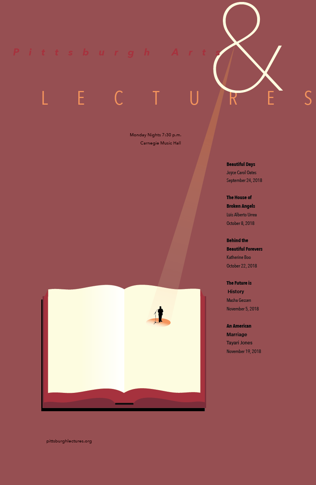
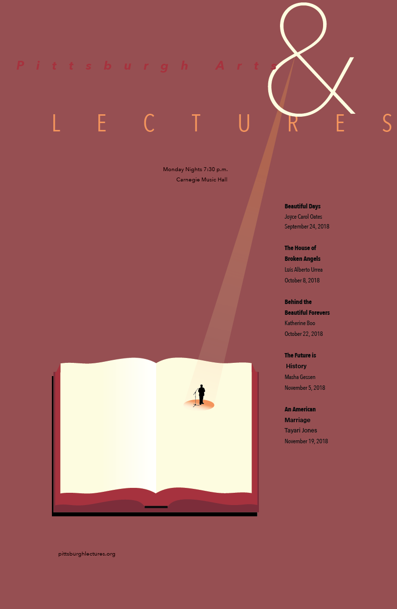
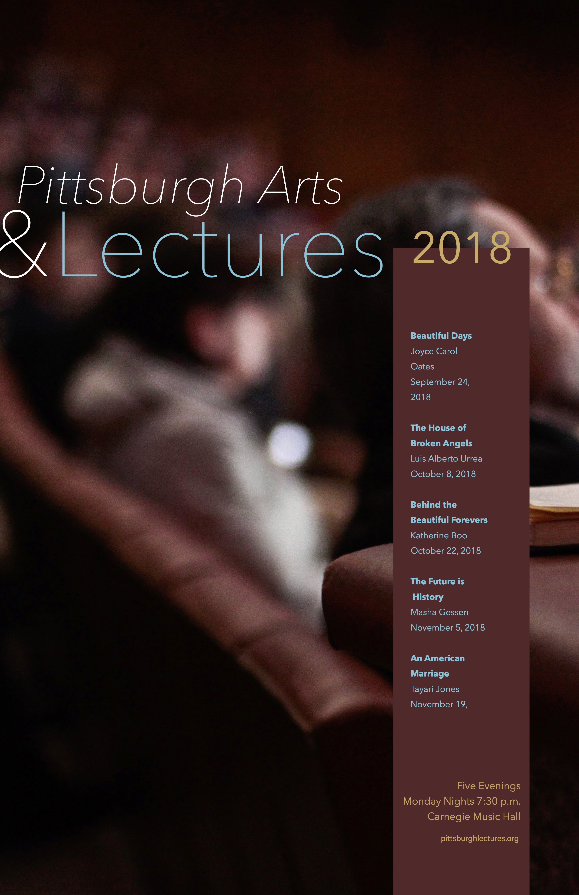
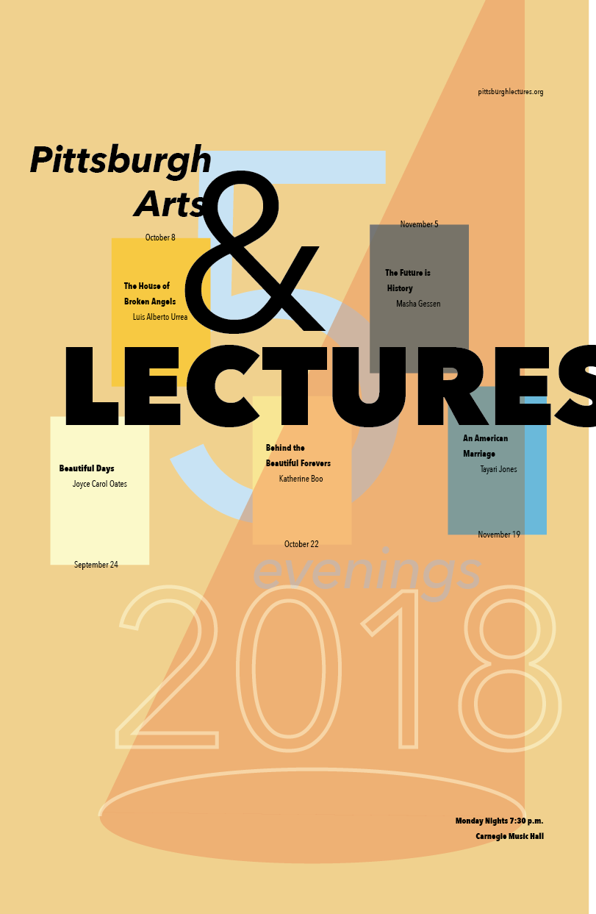
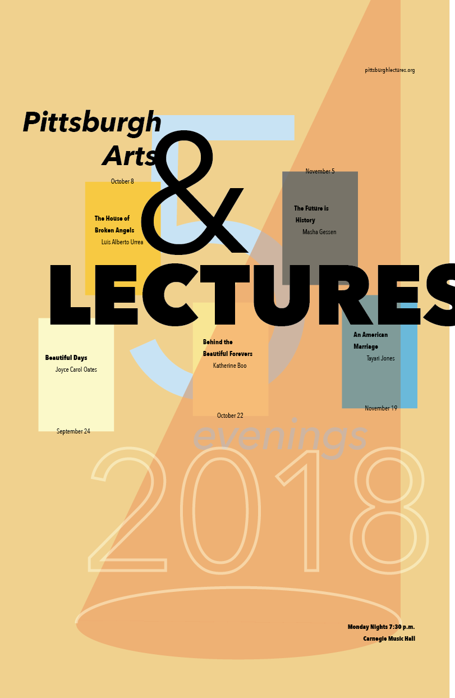

—
Prompt:
Create an 11x17 vertical poster with information from your assigned client. At least one graphic (photograph or illustration) must be used. Make sure that your poster is legible from each of the multiple reading distances of a poster. Take care with your composition and proportions as well.
Process
1—hierarchy studies
I started off with plain text from my randomly assigned client, so my first task was to explore basic hierarchy using text formatting tools such as bolding or indenting.


2—sketching
Afterwards, I started sketching and brainstorming possible imagery to use in my poster. Since this particular lecture series was centered on artists talking about their newest books, I wanted to include imagery that conveyed auditioriums, listening, a speaker, and literature.

3—color palettes
Before actually iterating on any imagery, I created some color palettes that I thought reflected the characteristics of the client: friendly, sophisticated, intellectual, insightful, bold, and exclusive.


4—iteration
Here are some early ideas and iterations of posters, many of which incorporate colors from the palettes above. 




 

5—refinement
I chose this iteration after getting some feedback from my professor and her TA; they said it portrayed the message of the campaign the best, since it conveyed both the speaking element and the literary element. After choosing it, I iterated on it some more, refining it.


6—final
Here is my final deliverable; the main refinements I made to this version were:1. to emphasize the author's names instead of the book titles, since I realized during crit that most well-known authors are better known by their names than by their newest book
2. adjusting the ampersand position in relation to the title, so there weren't any awkward tangents
3. to move the text "five evenings" to the top and change its color, so that the red had more of an even balance throughout the composition.